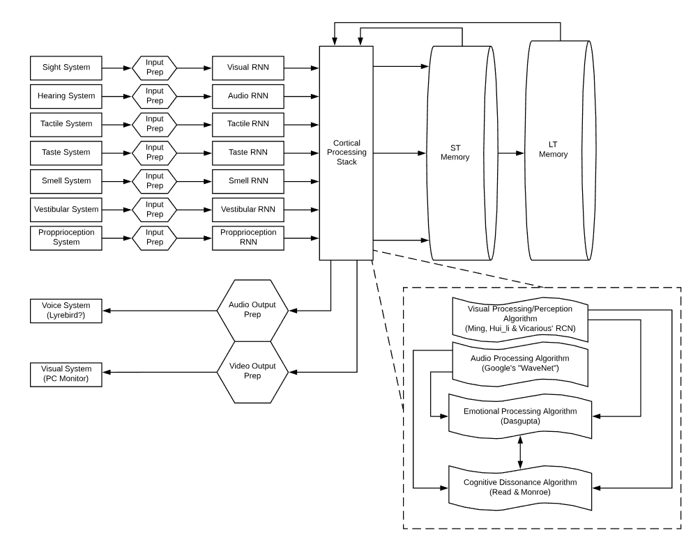

I'd like to start with a few quotes that I am fond of...
“The question is not whether intelligent machines can have any emotions, but whether machines can be intelligent without any emotions”. - Marvin Minsky
"Any neural process can be reproduced digitally in a computer." - Ray Kurzweil : How to Create a Mind
"Brains aren’t like machines; machines are like brains with something missing." - Professor Michael Gazzaniga
Out on a Limb
As a Software Engineering Consultant, self admitted tech addict and armchair A.I. enthusiast, I have been actively following the various fields that contribute to the overall understanding of Artificial Intelligence. Recurring, Convolutional Neural Networks. Deep Learning, NLP. I believe that we have in fact reproduced the functionality of the human brain. Even if it's viewed by some as simplisticly and on a minor level. There are various projects in flight that reproduce the varying functions and processes of the human brain. That's not really the question though is it? We want a sentient mind! However, the mind is this other, vastly elusive, thing...or is it?
We know that the average human's ability to think using their "mind" is based on their use of the varying systems that make up the human body. As the late Marvin Minsky pointed out in an interview with Ray Kurtzweil, several times over the recent past, a few individuals took complex thoughts and ideas in fields like physics and biology and boiled them down to some very simple explanations. Is the field of AI may very well be on the cusp of that type of iteration.
If the mind is made up of a group of systems that include seeing, hearing, smelling, tasting, and feeling. Simply put, these systems provide input for the brain to make decisions. These decisions result in outputs that appear as a response in the form of a function of one or more of these same systems.
Let's use a music video as an example of an occurrence during a specific moment in time. Our visual cortex takes in visual representations of the video during the moment the eyes are viewing the video. Our ears take in the sound that is present in that moment. It may be loud enough for our body to feel the sound as well.
What is physically viewed is interpreted by a system, which includes eyes, a visual cortex and subsequent connections to the brain. What is heard is interpreted by a system that includes our outer and inner ear and subsequent connections to the brain. Both of those systems work together to provide the response to the received input. response could be presented in the form of facial expressions, body motion and actions. These outputs may include a verbal response that might include, "Wow, I like this song".
Now, is it possible to deduce from the research done to date that if a machine were given the ability to see the video, hear the video and potentially "feel" the video. Then, through the various algorithms of today, interpret that input, by comparing it to the responses of those around it.
Newborn Theory
Humans learn everything from those around us. Starting at an early age, I have watched my daughter and sons develop their likes and dislikes based on what my wife and I determine to be bad or good. They decided they liked or disliked things based on whether my wife and I were happy or sad, smiling, frowning, scrunching our nose up, or showing many of the varying human responses to these moments in time. Is it plausible to think that a machine, if viewed as a new born from the moment it’s turned on, and treated as such, could "grow" in similar ways? Could they not learn how to respond, determine what to like, what not to like, by the interactions with their surroundings and those close to them? Then in the future, the system has now developed enough “knowledge” to start determining it’s own likes and dislikes and by proxy, their emotions, which end up being the summation of the life they lived and learned from.
For example, if I am listening to/watching a song/video, and my four year old is listening to it, he's looking to me to determine if it's a good song or not. He's never heard anything like it before, so he doesn't understand "how" to respond. He then sees me produce a positive response to the video, and he "begins" to enjoy the song. This feeling is immediately saved in his short-term and long-term memory. In a future moment, when the song comes on again, he remembers it and also remembers that he likes this song.
Lets not forget, that song we both liked when my son was 4, may be disliked now. Because over time, he’s fallen in with a crowd that likes different music, and he decides, I don't like that song any more. Is it not that simple?
How?
I am not 100% sure about this yet and I am still working on it. But for starters, let's break this process down further and visually represent the various pieces and parts of these systems.
Here's a basic model of what an AI might look like:
I think this design could give an AI the tools and systems needed to gather input. A place to store that input to be used for future decision making. The input is taken in through the various devices that simulate eyes and ears, etc.
This is, of course, a work in progress that I am exploring. I am vastly inexperienced in some of these fields of study, but maybe it's a fresh, more simplistic look at things that helps. Taking a step back and looking at the big picture.
Keepin' it simple… :-)